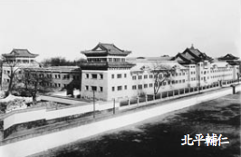
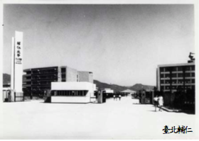

輔仁大學創校於民國十四年（1925年），在臺復校於民國五十年（1961年）【立案公文：教育部令(台50高12039號) 】【今年（2021）校慶為輔仁大學創校96週年及在臺復校60週年】。
自准復校迄110學年度，計有12個學院及進修部：51個日間學士班、49個碩士班、23個碩士在職專班、12個博士班、18個進修學士班及1個二年制在職專班。專任教師近724人及專任職工457人(約聘122人)。在校學生近2萬5千人；校友人數：北平時期校友逾1萬2千人，在臺復校以來畢業校友近23萬人。（資料更新日期：2021/10）
簡史
清同治 5 年(1866 年),清廷斥資興建 京師大學堂,商請北京代牧孟振生主教主 持,因無適當人才,而未予接受。但在當 時,天主教教會在中國創辦大學之計畫已 在醞釀之中。直至清光緒 29 年(1903 年),天主教 知名人士馬相伯於上海創辦震旦學院。民 國成立後,馬相伯先生與英斂之先生為振 興中國教育、介紹世界知識、弘揚天主教 義,乃上書羅馬教宗庇護(碧岳)1十世, 請派才高碩德之士來華創設公教大學。
民國 2 年,英斂之率先設輔仁社於北 平西郊的香山靜宜園,目的在招收天主教 青年以授之經史百家之學,但至民國 7 年 ,卻因經費拮据而被迫停辦。民國 8 年後 的數年間,羅馬教廷陸續派遣多位代表來 華勘察教會教育情形,其報告書中多以高 等公教教育機關不足及在華興建公教大學 有必要為論述。於是民國 10 年底時,教廷 傳信部便委請美國本篤會在華創辦公教大 學,至此羅馬教廷始有創設公教大學的決定。
民國 14 年(1925 年)2 月,受聘為校長的奧圖爾博士特來華籌備辦校事宜。奧 氏之摯友馬慕努先生及美國密爾瓦基天主 教婦女會捐助的美金 20 萬元,購得北京西 城定阜大街濤貝勒府為校址。並以王府西 書房成立預科。此時馬相伯原擬用「景教 」或「本篤」(因由本篤會主辦)為校名, 後終依英斂之的主張取名為北京公教大學 附設「輔仁社」(取論語顏淵第十二,曾子 說:「君子以文會友,以友輔仁」之「輔仁 」兩字)並聘英斂之為社長。英先生於民 國 15 年因病辭世。
民國 16 年(1927 年),由陳垣繼任校長 ,旋即遵教育部規章組織董事會,設正副 校長。7 月終獲教育部准予試辦,並正式改 校名「公教大學」為「輔仁大學」。
民國 18 年(1929 年),依國民政府頒佈 之大學法,改文科為文學院,並增設理學 院及教育學院,改組董事會向教育部呈請 立案。
民國 19 年 美國明尼蘇達州本篤會的修女,於 9 月來華為輔仁籌設修女院。20 年 8 月獲教育部准予立案之後輔仁大學至此 才發展為完全的大學,暨附屬男女中學。
民國 21 年 美國經濟不景氣,本校基金 大量縮減,影響學校之維持及發展。次年 (1933 年),教廷籲令輔大改由聖言會會士 接辦,輔大在聖言會承辦的 4、5 年內,不 只增購校產,且也邀聘名教授到校任教, 形成在我國抗戰前的急速發展。
民國 39 年春,因為有大部分的輔大教職員從事極端的反教會活動,學校教會當局就不再予以續聘。中共教育部不僅以不合規 定不予同意,並於 10 月 10 日中共教育部 宣佈接辦輔大。
民國 41 年(1952 年)輔仁大學被沒收 接管且廢去輔仁大學之名,改為北京師範 大學的一部。此後輔仁大學之名便在中國 消失,且輔仁大學在中國亦不復存在。
民國 35 年來臺的同學開始籌組輔大在 臺校友會,於臺中大肚成立。時至民國 37 年春,北平輔大當局鑑於動盪局勢惡化, 於是有了遷校的計畫,購置了長安東路一 段的房屋一棟(即今長安天主堂地址),做 為在臺輔仁的辦事處。省政府亦允許慨贈 圓山附近土地作校址,後因局勢急轉直下 ,聖言會羅馬總部電令停止一切活動,遷 校計畫就遭放棄。
大陸淪陷後,陸續來臺的校友大約有 700 人左右,民國 45 年(1956 年)校友會 正式成立,並積極地展開復校工作。
翌年 9 月,我國第一位樞機主教,輔 大校董田耕莘首次來臺,校友會即面陳輔 大在臺復校的意義及其重要性,田樞機表 示接受校友會的要求,並決定在返國之後 向教廷建議復校事宜。
民國 48 年(1959 年)校董于斌總主教 返國,校友會即與之洽談有關復校的事宜 。由於復校需要豐厚的資金,于樞機即奔 赴美國各教會籌募,但卻不甚順利。10 月 羅馬教廷發表任命于斌總主教為校長,教 宗若望廿三世率先慨捐美金 10 萬元之後, 美國波士頓總主教庫興樞機籌滿美金 100 萬元以做為初步建校的經費。
民國 49 年(1960 年),新董事會組織 成立,除正式聘請于斌為校長、向政府申請復校,並議決中國主教團負責文學院在 臺北建校;美國耶穌會負責法學院、工學 院,德國聖言會則負責理學院及外語學院 同在高雄大貝湖附近建校。此時,各縣市 如宜蘭、嘉義、花蓮等,擬爭取本校前往 建校而紛紛捐地者,就有 20 餘處之多。尤 以經校友會奔走而獲得士林鎮公所撥予的 內雙溪公地 92 甲半作建校之用為最有可能 ,但後卻因交通不便、水源困難等理由而 宣告放棄。
民國 50 年(1961 年),購妥在臺北市 吉林路 37、39 號的樓房兩棟,以作為復校 的籌備辦公地址。9 月並報准教育部先設立 文學院哲學研究所,招收的第一屆研究生 有 8 名,在吉林路舉行開學典禮後,並隨 即展開課程。民國 52 年(1963 年)2 月, 終於擇定並購妥臺北縣新莊鎮營盤里 30 餘 甲土地為校址;次月並即行破土興建文學 院、外語、法學院、家政系、理學院及男 生宿舍 5 棟大樓,至此,復校事宜終於塵 埃落定,輔仁大學也終於在臺灣的土地上 重獲新生。
資料來源: 輔大人 校史室
歷史舊照
